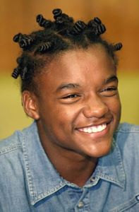

Biografia
Darlan Cunha
Darlan Cunha Christovam, mais conhecido apenas como Darlan Cunha (Rio de Janeiro, 26 de julho de 1988[1][2][3]), é um ator brasileiro. Ficou conhecido por interpretar Filé no filme internacionalmente premiado Cidade de Deus e Laranjinha na série Cidade dos Homens. A fama de Darlan e Douglas se estende além das telas, com ambos tendo participado do fenômeno cinematográfico “Cidade de Deus”.
Darlan era Laranjinha na série Cidade dos Homens, na TV Globo. Ele era o parceiro de cena de Douglas Silva, que interpretava o inseparável Acerola. E se você acha que a história termina aí, prepare-se para uma reviravolta digna de uma novela!

Douglas Silva
Douglas Silva, ou simplesmente DG (Rio de Janeiro, 27 de setembro de 1988), é um ator e cantor brasileiro, vencedor do prêmio de Melhor Ator pelo Festival de Havana.
Fez sua estreia como ator interpretando Dadinho no épico filme de ação Cidade de Deus (2002), pelo qual foi indicado ao Grande Otelo de Melhor Ator Coadjuvante aos 15 anos e venceu o prêmio de melhor ator Festival Internacional de Havana. Também já recebeu indicações para um Grande Otelo, um Prêmio Guarani e um Emmy Internacional.
Entre 2002 e 2005 atuou como Acerola no seriado Cidade dos Homens, na TV Globo. Seu personagem fez sucesso e por sua performance ele tornou-se o primeiro ator brasileiro a receber uma indicação ao Emmy Internacional de Melhor Ator. Da série também foi derivado um filme de mesmo nome (2007). Doze anos mais tarde, ele reviveu o personagem com o lançamento da quinta e sexta temporada da série, em 2017 e 2018, respectivamente.
Carreira
Ficou famoso ao interpretar a infância do bandido Dadinho no filme Cidade de Deus, longa indicado ao Óscar, em 2004. Também ganhou notoriedade ao interpretar Acerola na série Cidade dos Homens, da TV Globo. Ele se tornou o primeiro ator brasileiro a ser indicado ao Emmy Internacional.
Integrou a banda Soul Mais Samba, onde atuou como vocalista.
Em 14 de janeiro de 2022, Douglas foi confirmado como um dos 20 participantes da vigésima segunda temporada do reality show Big Brother Brasil, da TV Globo. Terminou o programa como terceiro colocado.